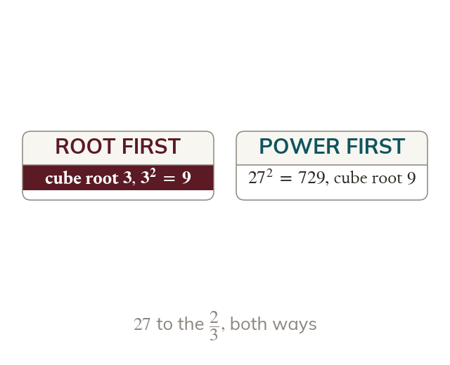
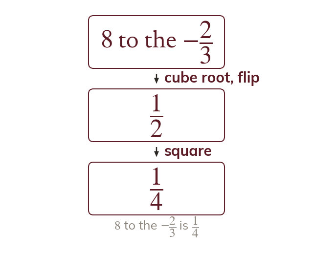
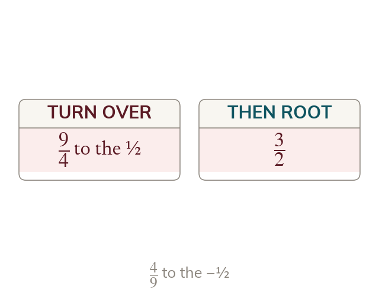

A root and a power
The denominator of the index is a root and the numerator is a power. So is the cube root of squared.
In an index m/n, the denominator is a root and the numerator is a power. So is the cube root of which is squared, which is
A power like joins the last two lessons: a root and a power at once. Add a minus sign and the reciprocal joins in too - three steps, each one already known.
Work down the page at your own pace. Write every answer in your book first, then click to check it.
Read each card, then follow the worked examples one step at a time.
The denominator of the index is a root and the numerator is a power. So is the cube root of squared.

The two steps give the same answer in either order. Taking the root first keeps the numbers small.
Pick an answer. If it's wrong, the feedback tells you which mistake it was.
Read each card, then follow the worked examples one step at a time.

A negative fractional index is a reciprocal, a root and a power. The minus sign never makes the answer negative.

With a fraction base, the reciprocal turns the fraction over. Then the root and the power act on top and bottom.
Pick an answer. If it's wrong, the feedback tells you which mistake it was.
Finished? Next lesson: 10H.6.1 Rewriting Powers with a Common Base.
Log in, then search for a code to practise that skill.
Videos, worksheets and more on each part of this lesson.